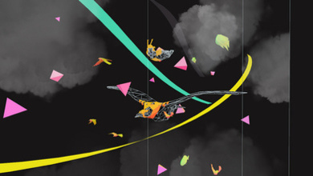
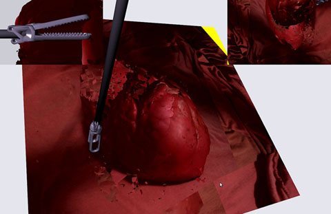
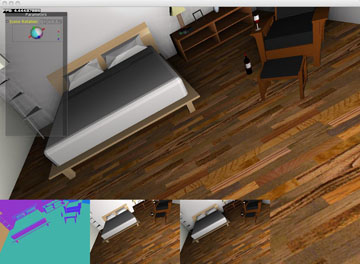
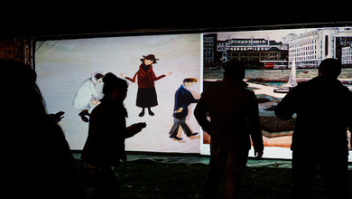
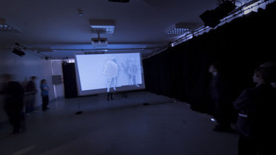

The Carp and the Seagull
An interactive movie, in WebGL, with Nexus Interactive

3D Organ Reconstruction
Working with the University of Leeds on 3D reconstruction with computer vision.

Phantom Limb Pain
Investigating Phantom Limb Pain with the Kinect and VR

Lowry to Life
An outdoor installation, celebrating LS Lowry

Animation11 - Only
An art installation for Digital festivals
Deutsche Bank Installation
A massive installation for Deutsche Bank, written in Cinder